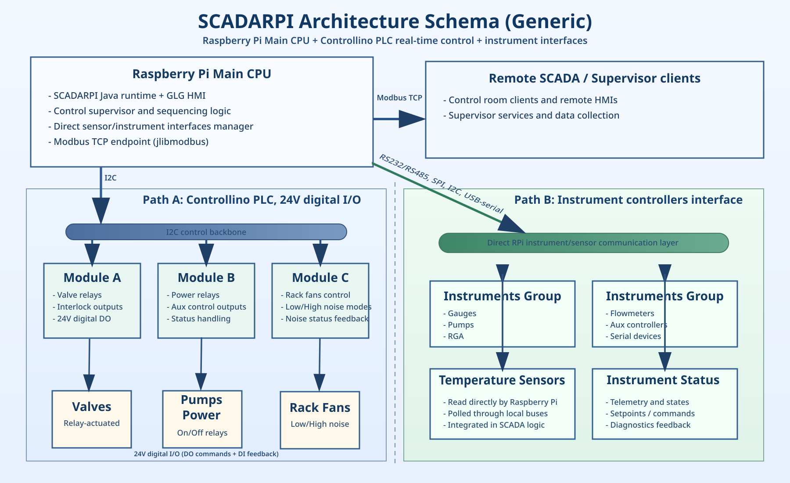
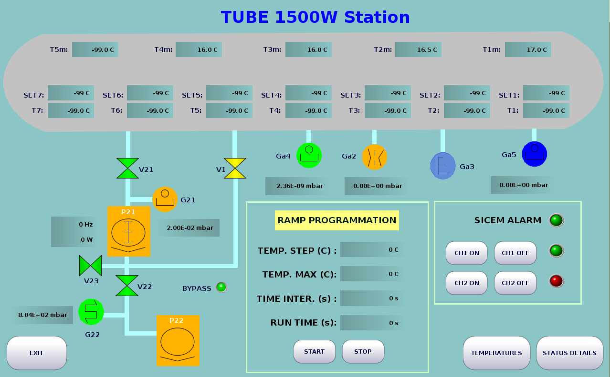

- Generated by
 1.9.1
1.9.1
|
SCADARPI API (work_nepanel)
API documentation for work_nepanel
|
SCADARPI is a multi-application Java 8 project for SCADA/HMI stations, designed primarily for Raspberry Pi embedded systems.
It has been designed for the Virgo vacuum subsystem and works in association with Controllino PLC, communicating with the main Raspberry Pi CPU through I2C. This work relies on the GenLogic GLG Toolkit for Java to build SCADA/HMI interfaces. Use GenLogic GlgBuilder to create and maintain the .g graphics files. Each work_* directory is a standalone application (own Main.java, device logic, GUI drawings, and logs), while top-level tooling (scadarpi, Makefile) gives one uniform way to compile and run them. Live API docs: https://danielsentenac.github.io/ScadaRPI/api/


api/ page is a landing page listing one API set per application module (api/work_*)../tools/generate_api_docs.shDOC_MODULES=work_pcounter ./tools/generate_api_docs.shgh-pages: ./tools/publish_api_docs.shscadarpi: main CLI used to list targets, compile, run, and clean.Makefile: thin wrapper around ./scadarpi.lib/: all third-party JARs used by the applications (Pi4J, jlibmodbus, GLG, serial libs, sqlite, etc.).work_*: application modules (for example work_panel, work_rga, work_venting, work_mainpanel).*.g files in work_*: GLG drawing files (built/edited with GlgBuilder) used by the GUI classes.Most modules follow this startup pattern:
Main builds a DeviceManager, creates one or more Device instances, starts their threads, starts a ModbusSlaveThread, then opens a GlgGui.Device subclasses encapsulate hardware/network integration (I2C, serial, Modbus TCP, HTTP clients, etc.).java and javac on PATH), or set JAVA_HOME / JAVA_BIN / JAVAC_BIN./dev/serial/...), I2C, GPIO, and reachable instrument/network endpoints.< 2 (v1.x APIs), which relies on WiringPi.Verified in this workspace on March 3, 2026:
java version "1.8.0_202"javac 1.8.0_202List available modules:
Compile one module:
Compile multiple modules:
Compile all modules:
Run one module:
Run in headless mode (no GUI):
Force GUI attempt:
Force hardware startup on non-ARM hosts:
Clean generated artifacts:
make listmake compile WORK=work_panelmake run WORK=work_panelmake run WORK=work_panel RUN_ARGS="--demo"make clean WORK=work_panelAs of March 3, 2026 in this repository state:
./scadarpi compile all to validate the full build in your current environment.work_* directory, usually named like *_YYYY-MM-DD.log.